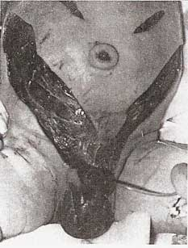
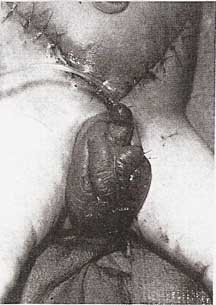
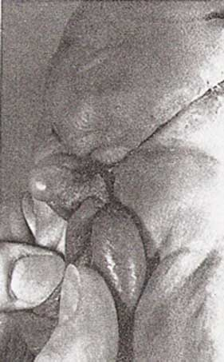

THE CIRCUMCISION REFERENCE LIBRARY
Necrotizing fasciitis after neonatal circumcision
Jeffrey R. Woodside, MD
• A 6-day-old infant had extensive
necrotizing fasciitis involving most of the abdominal wall
develop after circumcision with a
Plastibell device (Hollister, Inc). He survived this
life-threatening infection after vigorous cardiovascular
support, antibiotic therapy, and aggressive surgical
debridement. The diagnosis, bacteriology, and management of
necrotizing fasciitis are briefly discussed. The technical
aspects and complications of Gomco (Gomco Surgical
Manufacturing Corp) and Plastibell circumcision are compared.
Strangulation and devitalization of the prepuce is invariably
associated with Plastibell circumcision, and it may render
neonates circumcised by this technique more susceptible to
serious wound infection.
(Am J Dis Child 134:301-302,
1980)
Neonatal circumcision is the most commonly performed surgical procedure in the United States today. Although considered a minor operation, reported complications include infection, hemorrhage, loss of penile skin, laceration of penile or scrotal skin, injury to the glans, urethral fistula, urinary retention, staphylococcal scalded skin syndrome, concealed penis, and retained Plastibell risgs (Hollister, Inc).1-6 The experience with a newborn who had extensive necrotizing fasciitis of the abdominal wall develop after circumcision is the subject of this report. Necrotizing fasciitis has seldom been described in children, and to my knowledge, it has been reported only twice in neonates.7-8
REPORT OF A CASE
A 2.6-kg male infant was born by normal vaginal delivery after 39 weeks gestation. He was circumcised without incident by the Plastibell technique at age 3 days. Two days later, his mother noticed slight penile swelling and a small amount of blood and pus on the diapers. Later in the day, the penis and scrotum turned black-purple in color. The Plastibell was removed at another hospital and he was transferred to our institution.
He was lethargic, and he appeared acutely ill. His rectal temperature was 35.3 °C, his heart rate was 132 beats per minute, his respiratory rate was 40/min, and his systolic blood pressure was 40 mm Hg. Petechiae and multiple, 5-mm, flat black-purple lesions covered the trunk, arms, and legs. The skin of the shaft of the penis and part of the scrotum was necrotic. Induration and slight erythema of the skin of the abdominal wall extended from the inguinal areas to th elevel of the umbilicus. The hemoglobin level was 14 g/dL; hematocrit, 42%; platelet count, 7,500/cu mm; and WBC count, 26, 700/cu mm; with 38% neutrophils, 19% band forms, 39% lymphocytes, 4% monocytes, and 2% eosinophils. The prothrombin time was 14 s (control 11 s); partial thromboplastin time, 40 s; fibrinogen level, 86 mg/dL. Lumbar puncture yielded normal CSF. Gram’s stain of the contents from several of the skin lesions showed Gram-positive cocci.
His condition was treated with parenteral fluids, fresh frozen plasma, human antihemophilic factor (cryoprecipitate) and platelet concentrates. Parenteral nafcillin sodium, penicillin G potassium, chloramphenicol sodium succnate, and kanamycin sulfate were given.
|

Fig 1.–Abdominal wall and genitalia one week after extensive debridement. Apex of abdominal flap and small scrotal area are non-viable. Fasciotomies of right external oblique aponeurosis are demonstrated. |
The nonviable skin of the entire penile shaft was surgically debrided; the glans penis and corpora cavernosa appeared healthy. Two incisions were started at the base of the penis and carried superiorly across the suprapubic area. The underlying subcutaneous tissue and superficial fascia were necrotic. These incisions were then extended superiorly into the flanks before viable subcutaneous tissue was encountered. The resultant large V-shaped flap was extensively undermined and debrided. Multiple fasciotomies of the external oblique aponeurosis were performed, and the underlying muscles were healthy. The wounds were packed loosely with moist dressings. Postoperatively, his cardiovascular status rapidly improved, and sepsis and disseminated intravascular coagulation resolved.
|

Fig 2.–Primary closure of abdominal wounds. Split-thickness skin grafts have been applied to penile shaft and small, upper abdominal incisions. |
Gram’s stain of the surgically excised subcutaneous tissue showed a mixture of Gram-positive and Gram-negative rods and cocci. No organisms grew in an anaerobic culture of this same tissue, and aerobic culture showed a combination of coagulase-positive Staphylococcus aureus, S epidermidis, dipththeroids, nonhemolytic streptococcus, and α-hemolytic streptococcus. Clostridium perfringens was cultured from the necrotic penile tissue but not from the subcutaneous tissue. Culture of the contents of the septic skin emboli was sterile. A Micrococcus species was grown from a culture of the blood.
|

Fig 3. Well-healed abdominal and scrotal wounds two months after closure. Moderate contraction of suprapubic and penile scars has occurred. |
The extensive abdominal wound was treated with wet-to-dry dressings for further debridement. Granulation tissue was present in most of the wound after one week of therapy, and only the apex of the abdominal skin flap and a small area of the scrotum were nonviable. (Fig 1). Ten days after admission, the wounds were surgically debrided of all remaining necrotic tissue, and the abdominal wound was closed primarily (Fig 2). The scrotum was closed loosely, and a split-thickness skin graft was placed around the penile shaft. The abdominal and scrotal wounds were well healed two months later (Fig 3). Minor scar revisions will be necessary, but the functional and cosmetic results should be excellent.
COMMENT
Necrotizing fasciitis is a rapidly spreading bacterial infection producing edema, necrosis, and partial liquifaction of the subcutaneous fat, superficial fascia, and superficial layer of the deep fascia. It most frequently involves the extremities and abdominal wall, and it may occur after surgery or after relatively minor trauma such as abrasions, cuts or insect bites.9 Meleny10 first described 20 patients with this entity and cultured a hemolytic streptococcus from each. Culture results in more recent reports have demonstrated a combination of anaerobic and facultative anaerobic bacteria.9,11 Successful culture of these bacteria requires meticulous technique, and failure of the organisms to grow is not unusual. Patients with necrotizing fasciitis commonly have sepsis, disseminated intravascular coagulation, and hypotension, as in this patient.
Consideration of this disease in the appropriate clinical setting and a high degree of suspicion are required to detect the early skin changes of minimal erythema and poorly demarcated induration. Initial treatment must consist of cardiovascular stabilization and parenteral antibiotics effective against a broad spectrum of aerobic and anaerobic organisms. Guliano and associates11 recommend initial antibiotic treatment with penicillin, a penicillinase-resistant penicillin, gentamicin or tobramycin, and clindamycin or chloramphenicol. The most important aspect of therapy is surgical debridement and excision of all involved fascia and subcutaneous tissue. The reported mortality for necrotizing fasciitis ranges from 13% to 60%, with better survival after more radical surgical treatment.
Neonatal circumcision is usually performed with either the Plastibell device or the Gomco circumcision clamp (Gomco Surgical Manufacturing Corp). The Gomco seals together the skin and mucosal surfaces of the prepuce by briefly applied extrinsic pressure. The Plastibell technique crushes the prepuce between a suture and an underlying bell, which drops off in five to eight days.
Gee and Ansell12 reviewed the complications of 5,521 neonatal circumcisions performed during a ten-day period. The Gomco and Plastibell techniques were each used in approximately one half of the patients. The cumulative complication rate was 0.2%, with no significant differences between the two techniques for the various compications, except for infection. Wound infections occurred in 0.14% of the patients circumcised with the Gomco and 0.72% with the Plastibell. All infections were initially managed with local cleansing, and each infection after the Gomco resolved promptly. However, 20% of those infected after Plastibell circumcision had fever and irritability, which resolved only after antibiotic therapy. The Plastibell technique strangulates the prepuce and produces devitalized tissue that might be more susceptible to serious infection. The more loosely approximated prepuce after the Gomco technique would seem to permit ready egress of any purulence from between preputial layers. Thus, a wound infection of the circumcision site would tend to be locally contained.
The Committee on Fetus and Newborn of the American Academy of Pediatrics has stated that there are no valid medical indications for circumcision in the neonatal period. Nevertheless, many parents will still desire to have their male infants circumcised. Therefore, each physician performing circumcisions should be mindful that “circumcision is a surgical technique that requires careful aseptic technique, systematized postoperative observation, and evaluation after discharge from the hospital.”13 Serious and potentially life-threatening infections after circumcision of the newborn occur more frequently after Plastibell circumcision.12,14 This evidence suggests that Gomco circumcision is the preferred technique.
References
1. Sussman
SJ, Schiller RP, Shashikumar VL: Fournier’s
syndrome. Report of three cases and review of the
literature. Am J Dis Child 132:1189-1191;
1978.
2. Shulman
J, Ben-Hur N, Neuman Z: Surgical complications of
circumcision. Am J Dis Child 107:149-154, 1964.
3. Berman,
W: Urinary retention
due to ritual circumcision. Pediatrics 56:621,
1975.
4.
Annunziato D, Goldblum LM: Staphylococal
scalded skin syndrome: A complication of circumcision.
Am J Dis Child 132:1197-1188, 1978.
5. Trier
WC, Drach GW: Concealed penis:
Another complication of circumcision. Am J Dis
Child 132:1187-1188, 1973.
6. Datta
NS, Zinner NR: Complication from
Plastibell circumcision ring. Urology 9:57-58,
1977.
7. Wilson
HD, Haltalin KC: Acute necrotizing fasciitis in childhood:
Report of 11 cases. Am J Dis Child 125:591-595,
1973.
8.
Weinberger M, Hayres RE, Morse TS: Necrotizing fasciitis in a
neonate. Am J Dis Child 123:591-594, 1972.
9. Tehrani
MA, Ledingham IM: Necrotizing fasciitis. Postgrad Med
J 53:237-242, 1977.
10.
Meleny FL: Hemolytic streptococcus gangrene. Arch Surg
9:317-364, 1924.
11.
Guiliano A, Lewis F, Hadley K, et al.: Bacteriology of
necrotizing fasciitis. Am J Surg 134:52-57,
1977.
12. Gee
WF, Ansell JS: Neonatal circumcision: A ten-year overview:
With comparison of the Gomco clamp and the Plastibell device.
Pediatrics 58:824-827, 1976.
13.
Thompson HC, King LR, Knox E, et al: Report of the ad hoc
task force on circumcision. Pediatrics 56:610-611,
1975.
14.
Kirkpatrick BV, Eitzman DV: Neonatal
septicemia after circumcision. Clin Pediatr
13:767-768, 1974.
http://www.cirp.org/library/complications/woodside2/